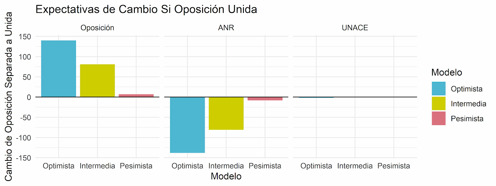
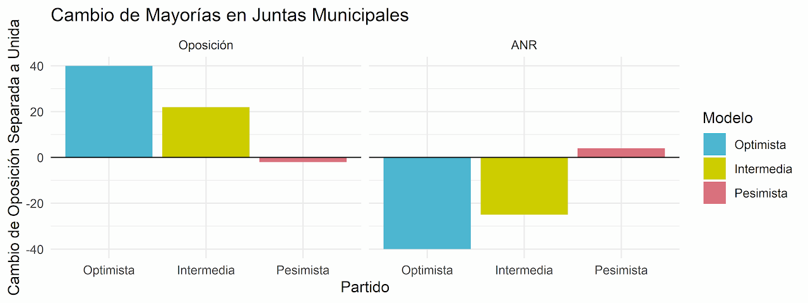
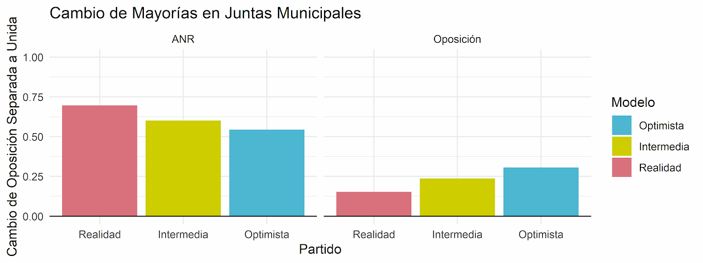

Mi blog2022Andrés Carrizosa, investigador del Instituto Desarrollo
Sin concertación legislativa la oposición regala bancas a la ANR
Una simulación con los resultados de las municipales de 2021. Con listas únicas, la oposición habría ganado entre 7 y 140 concejalías más y la mayoría en hasta 40 juntas municipales más, según el escenario.
El acercamiento de las diferentes facciones de la oposición para concretar una concertación es un evento histórico. Pero si miramos bajo la superficie podremos ver que la concertación que se quiere consensuar tiene una debilidad muy grande. En general, se habla de una concertación ejecutiva y no de una concertación legislativa. El principal argumento que quiero proponer en este artículo es que la oposición debería considerar seriamente formar una concertación legislativa por una simple razón:
El D’hondt favorece a los partidos grandes, y por eso a la oposición le conviene competir como una sola lista legislativa de concertación en vez de competir como varias listas separadas.
Este es un hecho que nadie niega, pero muchas veces es difícil medir exactamente cuánto castiga el D’hondt a los partidos que compiten de manera separada.
Para demostrar cuántos escaños sacrifica la oposición al competir de manera dividida, lo que haré es re-computar el D’hondt para los resultados de las elecciones municipales del 2021 asumiendo que todos los partidos de la oposición formaron una lista única. Al comparar los resultados de esta hipotética lista única con los resultados reales podremos ver cuántos escaños dejaron de ganar los miembros de la oposición por competir separadamente. Como veremos, mi análisis demuestra que la oposición hubiese recibido entre 81 y 140 bancas de concejales más de lo que recibieron, y hubiesen obtenido mayoría propia en entre 22 a 40 juntas municipales más si competían como una lista única de concertación en vez de como listas separadas. A continuación presento mi evidencia.
Antes de empezar, hay un problema que tenemos que resolver para poder llevar a cabo esta simulación. El problema principal es que como las listas de oposición son varias, entonces al juntar todas las listas de estos partidos para crear una lista única, podemos crear una lista más larga que los escaños que hay disponibles en un distrito electoral dado. Por ejemplo, en la tabla de abajo podemos ver una hipotética lista única de la oposición en Asunción. A pesar de que sólo hay 24 escaños en Asunción, la lista única posible supera este número. Esto significa que en nuestra simulación existen “candidatos superfluos” que probablemente no hubiesen existido si una concertación real se hubiese concretado antes de las elecciones municipales. Abajo muestro una lista única hasta el espacio 32 para ilustrar—mostrando 8 candidatos superfluos—pero en realidad la lista posible es mucho más larga.
| Lugar | Candidatura | Votos |
|---|---|---|
| 1 | PLRA | 8.357 |
| 2 | PLRA | 6.751 |
| 3 | PPQ | 5.033 |
| 4 | PLRA | 4.653 |
| 5 | EC | 4.637 |
| 6 | PPQ | 4.628 |
| 7 | PPQ | 4.260 |
| 8 | PLRA | 3.410 |
| 9 | PLRA | 3.203 |
| 10 | PLRA | 3.143 |
| 11 | APT | 2.648 |
| 12 | PPQ | 2.444 |
| 13 | PPQ | 2.392 |
| 14 | PLRA | 1.981 |
| 15 | PRF | 1.841 |
| 16 | PLRA | 1.749 |
| 17 | PLRA | 1.598 |
| 18 | PDP | 1.483 |
| 19 | PPQ | 1.338 |
| 20 | EC | 1.324 |
| 21 | PPH | 1.314 |
| 22 | PLRA | 1.180 |
| 23 | PPQ | 1.141 |
| 24 | PRF | 1.114 |
| 25 | APT | 964 |
| 26 | EC | 931 |
| 27 | PPH | 918 |
| 28 | PPQ | 915 |
| 29 | PPH | 896 |
| 30 | CNFG | 858 |
| 31 | PPQ | 799 |
| 32 | APT | 760 |
| … | … | … |
Para poder simular qué hubiese pasado si la oposición competía conjuntamente en las municipales, la pregunta que tengo que resolver es ¿qué hacer con los votos personales que recibieron los candidatos superfluos? Para lidiar con este problema creé tres alternativas: la pesimista, intermedia y optimista.
La alternativa pesimista esencialmente descarta todos los votos otorgados a candidatos superfluos. Por ejemplo, en Asunción, descartaríamos todos los votos desde la posición 25 en adelante. Hacer esto asume que si un votante no puede votar por el individuo que prefería, entonces se abstiene de votar. En términos prácticos, esto significa que descarto 386.413 votos de la oposición en este escenario. Esta versión es extremadamente pesimista, y este escenario es realmente poco probable. De todos modos la incluyo para ilustrar los peores resultados imaginables para una oposición unida.
En la opción intermedia, en vez de descartar el 100% de los votos que fueron a candidatos superfluos, sólo descarto el 50% de estos votos—asumiendo que la mitad se mantiene con la concertación a pesar de no tener su candidato preferido y que la otra mitad se abstiene de votar—resultando así en 193.206 votos menos para la oposición. Finalmente, la opción optimista no descarta ningún voto de la oposición, y asume que todos los que hubiesen votado por candidatos superfluos encuentran a otra persona por quién votar en la lista de la concertación.
Con estos escenarios podemos simular qué hubiese pasado si es que la oposición competía unida calculando el D’hondt bajo el supuesto optimista, intermedio y pesimista, y comparando la atribución de escaños bajo cada escenario a las atribuciones de escaños reales que ocurrieron en las municipales del 2021. En el gráfico de abajo podemos ver el resultado de estas simulaciones. Lo que el gráfico muestra es que en el escenario optimista de la lista única la oposición hubiese recibido 140 escaños más de lo que realmente recibió en el 2021, y los colorados hubiesen conseguido 138 escaños menos. En la versión intermedia, la oposición hubiese recibido 81 escaños más y los colorados 81 escaños menos. Finalmente, hasta en la versión pesimista donde se descartan 386.413 votos de la oposición, la oposición hubiese recibido 7 escaños más y los colorados 8 escaños menos de lo que recibieron en 2021. Los cambios de los resultados para la UNACE son mínimos, pero los incluí separadamente, ya que en términos electorales no se le puede considerar ni como ANR ni como oposición. En resumen, podemos llegar a la conclusión que si la oposición competía unida hubiese recibido entre 81 a 140 bancas más en las juntas municipales de lo que recibieron realmente.

A primera vista esto puede parecer poco. Con un total de 2.780 bancas disponibles en todo el país, hasta la ganancia de 140 escaños representa sólo 5% del total de escaños disponibles. ¿Realmente vale la pena todo este esfuerzo por un máximo de 5% de ganancias en escaños?
Para responder esta pregunta, algo que hay que tener en cuenta es que cada escaño no vale lo mismo. Esto es debido a que los que legislan realmente no son los concejales individuales, sino las mayorías. Entonces lo que necesitamos saber es cuántas juntas municipales cambiaron de mano de la ANR a la oposición como resultado de las ganancias que proveyó el ejercicio anterior.
El gráfico de abajo explora en cuántas juntas municipales más la oposición hubiese tenido una mayoría propia (más de 50% de las bancas) si es que competía como una sola lista. Lo que podemos ver es que en la versión optimista la oposición alcanza la mayoría en 40 juntas municipales adicionales a lo que recibieron realmente, y en la versión intermedia la oposición alcanza la mayoría en 22 juntas municipales adicionales. Sólo en la versión pesimista pierden 4 mayorías de juntas municipales. Pero esta versión pesimista es, de vuelta, una consecuencia de los 386.413 votos de la oposición que fueron descartados. Como un todo lo más probable parece ser que si competían como una concertación conjunta, la oposición hubiera controlado entre 22 y 40 juntas municipales más de lo que realmente lograron controlar en las últimas elecciones municipales. Se puede notar que las ganancias que la oposición pudo haber logrado en las elecciones municipales son sustanciales. Esto representa el 8% al 15% de las 261 juntas municipales disponibles.

En realidad si miramos los porcentajes totales de cuántas mayorías cambian de mano de la ANR a la oposición, en el gráfico de abajo podemos ver que en los resultados reales del año 2021 la ANR logró una mayoría en casi el 70% de las juntas municipales, mientras que la oposición sólo logró lo mismo en el 15%. En el escenario intermedio de la concertación los colorados sólo hubiesen recibido una mayoría propia en el 60% de las juntas municipales (¡una reducción de 10%!), y en la versión optimista hubiesen recibido mayoría en el 54%. En cambio en la versión intermedia la oposición hubiese recibido mayoría en 23% de las juntas municipales, y en versión optimista hubiesen recibido mayoría el 30%. Esta última figura, ¡es el doble de las mayorías que la oposición recibió realmente!

La conclusión principal de este análisis es esta: en las municipales, por competir separadamente, la oposición regaló entre 81 a 140 escaños a la ANR y regaló la mayoría en 25 a 39 juntas municipales. Si lograsen correr juntos la oposición definitivamente ganaría más escaños de lo que recibe actualmente. Algo especialmente interesante es que a pesar de que las opciones pesimistas, optimistas e intermedias sí cambian la cantidad de votos que recibe la oposición, yo siempre mantuve la cantidad de votos que recibió la ANR constante. Esto significa que la unión fortalece a la oposición hasta si la fuerza de la ANR se mantiene. En otras palabras, la unión permite que la oposición quite bancas de la ANR hasta si no logra quitar votos de la ANR.
Finalmente, es importante notar que la creación de una lista única de oposición a través de la concertación es facilitada por las listas desbloqueadas. Las listas desbloqueadas promueven partidos políticos con mucha fragmentación interna. La oposición en nuestro país siempre estuvo y probablemente siempre estará fragmentada. Pero ahora existen dos maneras de lidiar con esa fragmentación. La primera forma, la que no recomiendo por lo expresado en este artículo, es que diferentes facciones compitan como listas separadas. La segunda, mejor, alternativa es que compitan unidos, y que la fragmentación interna sea expresada como una competencia por los votos preferenciales. De esta manera, puede seguir habiendo una competencia ideológica adentro de la concertación opositora, pero al menos de esta manera no estarían regalando escaños a la ANR. En pocas palabras, para ser una alternativa real y constante ante el Partido Colorado, la oposición debería formar una concertación legislativa.
¿Quiere replicar el análisis? Descargue los datos y el código aquí.